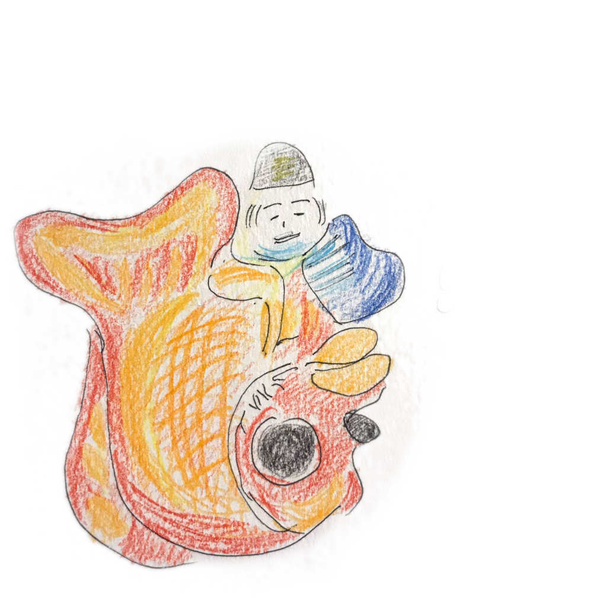

Our TV is connected to our receiver with an optical cable.
Unfortunately someone decided that changing the volume doesn't affect the device connected via optical.
Therefore I decided to create an application that can capture the volume change on our Android TV.
This volume change is than relayed via HTTP to an ESP8622.
The ESP has an IR led connected which will send the volume change to the receiver.
Besides the volume the application also checks if the TV is on or off and turns the receiver on/off as needed.
Code can be found here:
IRTranslator
The microwave power button and timer combination failed.
Instead of trowing it away I decided to make it smart.
By putting in a Raspberry Pi zero w and make it host a server/webserver to control a relay, the Microwave was alive again!
I also created a native Android app, because why not.
By accident the Microwave is now also controllable by the TV.
Code can be found here:
Hardware and
App
More to come. See you later!
